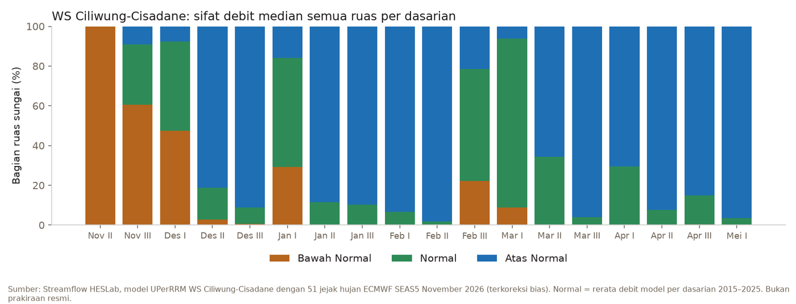
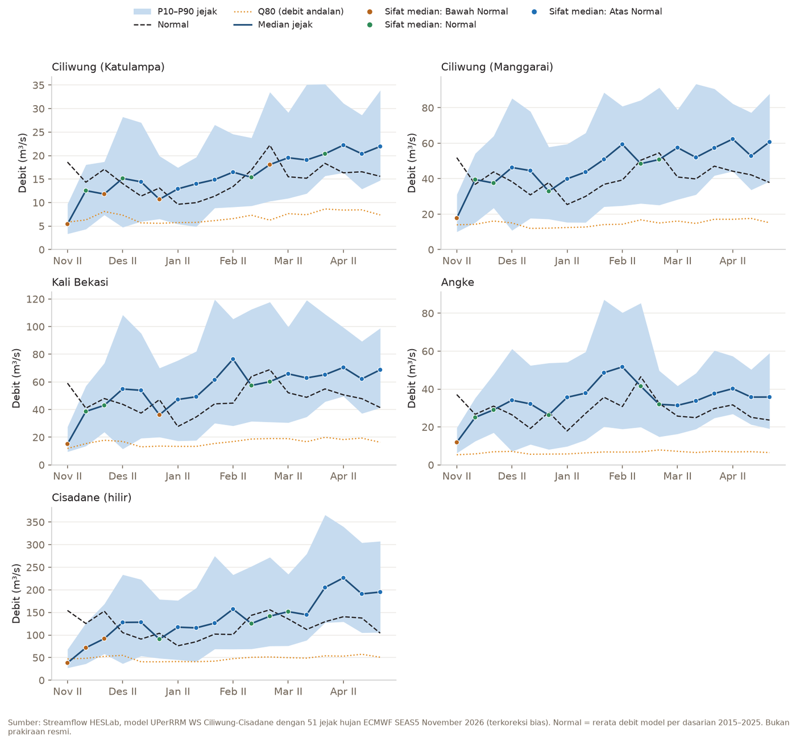

Awal November 2026 di sekitar Jakarta masih sangat kering. Pada dasarian I November (1–10 November), hujan di Bogor, Depok, Jakarta, Tangerang, dan Bekasi hanya 3 sampai 9 % dari normal menurut GSMaP Standard di HESLab Portal, padahal normalnya sekitar 55 sampai 110 mm. Bulan sebelumnya pun semua kabupaten/kota itu di bawah normal: Oktober hanya 21 sampai 59 % dari normal, dan di Jakarta, Depok, serta Tangerang deret dasarian di bawah normal sudah berlangsung 12 sampai 16 dasarian berturut-turut.
Tulisan ini membaca prakiraan debit musiman HESLab untuk Wilayah Sungai (WS) Ciliwung-Cisadane dari run SEAS5 November 2026: kapan sungai-sungai di wilayah ini diprakirakan keluar dari kondisi kering, dan seberapa yakin prakiraannya. Isinya kajian riset atas keluaran model, bukan prakiraan resmi.
Ringkasan prakiraan
Prakiraan dibuat 12 Nov 2026 dari 51 jejak hujan ECMWF SEAS5 November 2026, untuk 18 dasarian (Nov II 2026 sampai Mei I 2027). Setiap jejak menjalankan model hujan-limpasan HESLab untuk seluruh ruas sungai WS Ciliwung-Cisadane, lalu debit rerata tiap dasarian dibandingkan dengan normalnya, yaitu rerata debit model pada dasarian yang sama 2015–2025.

- Nov II 2026: 100 % ruas Bawah Normal, 0 % Normal, 0 % Atas Normal (menurut median jejak).
- Ruas Bawah Normal tidak lagi mayoritas mulai Des I 2026.
- Bagian ruas Atas Normal terbesar pada Feb II 2027 (98 %).
Polanya jelas dalam tiga tahap. Sampai Des I, sungai masih membawa sisa kekeringan: semua ruas Bawah Normal pada Nov II, dan sekitar separuhnya masih Bawah Normal pada Des I. Mulai Des II, lebih dari 80 % ruas berbalik menjadi Atas Normal. Setelah itu, sebagian besar dasarian sampai Mei didominasi Atas Normal, dengan jeda pada Jan I dan pada Feb III sampai Mar I.
Titik kunci

| Dasarian | Ciliwung (Katulampa) | Ciliwung (Manggarai) | Kali Bekasi | Angke | Cisadane (hilir) |
|---|---|---|---|---|---|
| Nov II 2026 | 29 % BN | 34 % BN | 26 % BN | 32 % BN | 25 % BN |
| Nov III 2026 | 88 % N | 107 % N | 94 % N | 94 % N | 57 % BN |
| Des I 2026 | 69 % BN | 86 % N | 90 % N | 94 % N | 60 % BN |
| Des II 2026 | 108 % N | 121 % AN | 125 % AN | 129 % AN | 121 % AN |
| Des III 2026 | 127 % AN | 144 % AN | 144 % AN | 167 % AN | 141 % AN |
| Jan I 2027 | 82 % BN | 87 % N | 77 % BN | 95 % N | 87 % N |
Angka = median jejak dalam persen normal; BN = Bawah Normal, N = Normal, AN = Atas Normal (batas 85 % dan 115 %).
- Ciliwung (Katulampa): Nov II 2026 median 5,43 m³/s (29 % dari normal 18,6 m³/s), peluang Bawah Normal 100 %, setara Q81. Sifat median per dasarian: Bawah Normal Nov II 2026; Normal Nov III 2026; Bawah Normal Des I 2026; Normal Des II 2026; Atas Normal Des III 2026; Bawah Normal Jan I 2027.
- Ciliwung (Manggarai): Nov II 2026 median 17,8 m³/s (34 % dari normal 51,9 m³/s), peluang Bawah Normal 98 %, setara Q71. Sifat median per dasarian: Bawah Normal Nov II 2026; Normal Nov III 2026 sampai Des I 2026; Atas Normal Des II 2026 sampai Des III 2026; Normal Jan I 2027.
- Kali Bekasi: Nov II 2026 median 15,1 m³/s (26 % dari normal 59,1 m³/s), peluang Bawah Normal 100 %, setara Q72. Sifat median per dasarian: Bawah Normal Nov II 2026; Normal Nov III 2026 sampai Des I 2026; Atas Normal Des II 2026 sampai Des III 2026; Bawah Normal Jan I 2027.
- Angke: Nov II 2026 median 11,9 m³/s (32 % dari normal 37,1 m³/s), peluang Bawah Normal 100 %, setara Q53. Sifat median per dasarian: Bawah Normal Nov II 2026; Normal Nov III 2026 sampai Des I 2026; Atas Normal Des II 2026 sampai Des III 2026; Normal Jan I 2027.
- Cisadane (hilir): Nov II 2026 median 38,3 m³/s (25 % dari normal 154 m³/s), peluang Bawah Normal 100 %, setara Q90. Sifat median per dasarian: Bawah Normal Nov II 2026 sampai Des I 2026; Atas Normal Des II 2026 sampai Des III 2026; Normal Jan I 2027.
Cisadane paling lambat pulih. Ciliwung, Bekasi, dan Angke sudah kembali ke kisaran Normal pada Nov III, sedangkan Cisadane hilir masih Bawah Normal sampai Des I (57 sampai 60 % dari normal). Pada Nov II, debit median Cisadane setara Q90: debit model setinggi itu disamai atau dilampaui pada 90 % hari dasarian yang sama 2015–2025, artinya hanya sekitar satu dari sepuluh hari pada periode itu yang lebih kering.
Dibandingkan prakiraan Oktober
Run SEAS5 Oktober (prakiraan 29 Oktober) dan run November menunjuk arah yang sama: kering sampai awal Desember, lalu basah. Run November sedikit lebih cepat basah.
| Dasarian | Run Oktober: ruas BN / AN | Run November: ruas BN / AN |
|---|---|---|
| Nov III 2026 | 90 % / 1 % | 61 % / 9 % |
| Des I 2026 | 68 % / 0 % | 47 % / 8 % |
| Des II 2026 | 20 % / 39 % | 3 % / 81 % |
| Des III 2026 | 5 % / 81 % | 1 % / 91 % |
| Jan I 2027 | 1 % / 38 % | 29 % / 16 % |
Perubahan terbesar ada pada Des II: bagian ruas Atas Normal naik dari 39 % menjadi 81 %. Sebaliknya, Jan I kini tampak lebih kering daripada run Oktober. Pergeseran waktu seperti ini wajar untuk prakiraan musiman, dan menjadi alasan untuk membaca satu dasarian yang jauh sebagai kecenderungan, bukan jadwal.
Apa artinya
Bagi pengguna air, beberapa dasarian ke depan masih masa paling rawan. Pengambilan air baku dan irigasi, terutama di Cisadane, sebaiknya tetap memperhitungkan debit yang rendah sampai awal Desember. Pada Nov II, median prakiraan di semua titik kunci jauh di bawah normal, dan peluang Bawah Normalnya 98 sampai 100 %.
Mulai pertengahan Desember, yang perlu diperhatikan berganti. Debit Atas Normal pada puncak musim hujan bukan prakiraan banjir, karena prakiraan ini adalah rerata sepuluh hari. Namun, itu berarti sungai-sungai di wilayah ini diprakirakan lebih penuh daripada biasanya ketika hujan lebat datang. Untuk banjir, yang menentukan adalah hujan beberapa jam, dan pemantauannya tersedia per jam di FEWS HESLab Portal.
Sekilas, prakiraan basah ini tampak bertentangan dengan El Niño yang sangat kuat. Artikel El Niño/IOD November menjelaskan bahwa pengaruh El Niño pada hujan Indonesia umumnya paling terasa pada musim kemarau dan peralihan, lalu melemah saat puncak musim hujan, dan bahwa laut yang hangat di Laut Jawa dapat mendukung pembentukan awan. Prakiraan debit ini sejalan dengan gambaran itu: kekeringan kemarau dan peralihan masih terasa sampai awal Desember, lalu musim hujan tetap datang. Yang belum bisa dipastikan adalah kapan tepatnya, sehingga prakiraan ini akan diperbarui dengan run SEAS5 Desember.
Cara membaca
- Normal = rerata debit model pada dasarian yang sama 2015–2025. Bawah Normal: kurang dari 85 % normal; Normal: 85–115 %; Atas Normal: lebih dari 115 %.
- Peluang = bagian dari 51 jejak SEAS5 yang jatuh di kelas itu. Median = debit tengah dari 51 jejak SEAS5. P10 (skenario kering) dan P90 (skenario basah) = debit yang hanya dilampaui ke bawah atau ke atas oleh 10 % jejak; bila P90 pun Bawah Normal atau P10 pun Atas Normal, sinyalnya kuat.
- Debit andalan Q50, Q80, Q90 = debit harian model yang disamai atau dilampaui pada 50, 80, 90 % hari dasarian yang sama 2015–2025 (Weibull m/(n+1), interpolasi). "Setara Q73" = median prakiraan disamai atau dilampaui pada 73 % hari itu: makin besar angkanya, makin kering. Median adalah rerata dasarian, Q50-Q90 dari debit harian.
- Dasarian yang jauh menunjukkan kecenderungan saja: SEAS5 tidak dapat memastikan waktu satu dasarian beberapa bulan ke depan.
- Peta semua ruas dan panel tiap ruas ada di halaman Streamflow WS Ciliwung-Cisadane.
Batasan
- Bukan prakiraan resmi: sifat debit di halaman ini adalah hasil model untuk riset dan pemantauan, digerakkan prakiraan musiman ECMWF SEAS5. Untuk prakiraan iklim resmi, acu BMKG; untuk pengelolaan air, BBWS/BWS wilayah sungai terkait. Model memakai parameter bawaan yang belum dikalibrasi terhadap debit terukur.
- Debit adalah hasil model, bukan pengukuran; nilai mutlaknya dapat berbeda dari pos duga air. Sifat terhadap normal model lebih dapat dipegang daripada angka m³/s.
- Hujan SEAS5 dikoreksi bias terhadap hujan model per bulan, tetapi keandalan prakiraan musiman berkurang makin jauh dari tanggal prakiraan.
- Normal 2015–2025 adalah sebelas tahun terakhir, bukan normal 30 tahun. "Atas Normal" berarti lebih basah daripada rata-rata sebelas tahun itu.
Rujukan
- HESLab. El Niño mendekati puncak, IOD menuju netral: hujan meluas di Sumatera.
- HESLab Portal. Hujan dasarian per kabupaten/kota, GSMaP Standard (JAXA), normal 1999–2025.
- ECMWF SEAS5 (system 51), prakiraan musiman; GSMaP Standard v8 (JAXA) untuk hujan model historis.